ВНИМАНИЕ! ЖЕЛЕЗНАЯ ДОРОГА!
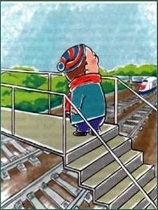
|
Переходи железнодорожные пути только по пешеходным переходам, мостам и тоннелям, чтобы тебя не сбил поезд! |
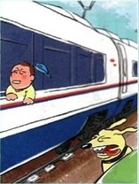
|
Не высовывайся из окон вагона и из дверей тамбура, встречный поезд может тебе навредить. |
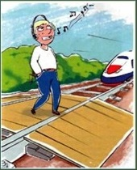
|
Не используй наушники и мобильные телефоны при переходе через железнодорожные пути, ты можешь не услышать звук приближающегося поезда. |
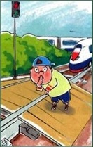
|
Не переходи железнодорожные пути на красный свет светофора, поезд мчится с огромной скоростью. Надо подождать, когда загорится зелёный свет. |
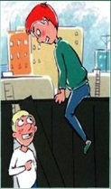
|
Не пытайтесь проникнуть на пассажирскую платформу и железнодорожные пути в неустановленном месте, ты можешь оказаться в опасной зоне – зоне движения поездов. |
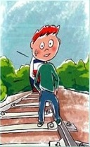
|
Не ходи по железнодорожным путям, ты можешь не успеть убежать от приближающегося поезда. |
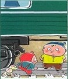
|
Не подлезай под железнодорожный подвижной состав, поезд может поехать в любой момент и навредить тебе. |
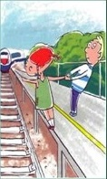
|
Не заходи за линию безопасности у края пассажирской платформы, ты можешь нечаянно упасть на железнодорожные пути, по которым мчатся поезда. |
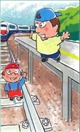
|
Не прыгай с пассажирской платформы на железнодорожные пути, они намного ниже платформы. Ты можешь сам не подняться на платформу, а поезд приближается очень быстро. |
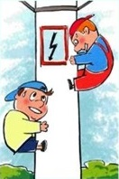
|
Не поднимайся на опоры и специальные конструкции контактной сети и воздушных линий, тебя может ударить током. |
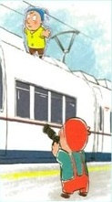
|
Не поднимайся на крыши вагонов поездов, тебя может ударить током; а если поезд поедет – ты упадёшь на землю. |
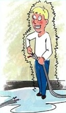
|
Не приближайся к оборванным проводам, тебя может ударить током; сразу расскажи об этом взрослым, которые находятся рядом. |
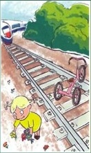
|
Не оставляй на железнодорожных путях посторонних предметов, если поезд наедет на какой-то предмет, может произойти авария. |
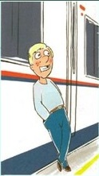
|
Не прислоняйся к стоящим вагонам, поезд может поехать и ты упадешь. |
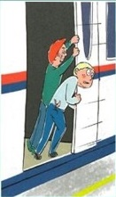
|
Не препятствуй автоматическому открытию/закрытию дверей вагонов, ты можешь получить сильную травму. |
Источник и подробная информация о действиях на сайте:
http:// www.rzd.ru/presentation/pravila-povedeinya/RZD.swf
ТЕЛЕФОН СЛУЖБЫ СПАСЕНИЯ: 112